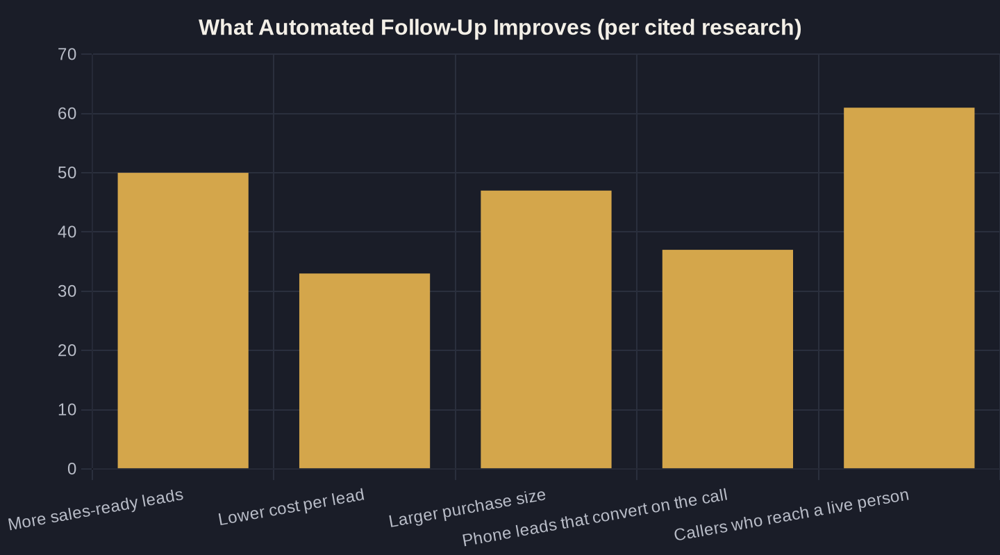

Automated Lead Follow-Up: Convert More Without Lifting a Finger
The leads you already paid for are aging out unanswered. Here is how automated follow-up catches them, and what speed is actually worth.
Key takeaways
- Speed is the whole game: replying to a web lead within 5 minutes makes you up to 100x more likely to connect and 21x more likely to qualify it (MIT).
- You are slower than you think: only 7% of companies reply within 5 minutes and 55% never reply within 5 business days, so being genuinely first is a cheap structural edge.
- One auto-reply is not follow-up. A timed sequence drives 50% more sales-ready leads at 33% lower cost and 47% larger purchases.
- Protect the phone. With 37% of phone leads converting on the call and 39% of callers never reaching a person, missed-call text-back and an AI receptionist plug the most expensive leak.
- Run the Owner's Math: a lead that ages out unanswered is not a $40 loss, it is the lost profit of the job, so faster follow-up raises ROAS with no extra budget.
Why Automated Lead Follow-Up Wins the Job
Every owner I work with has the same leak, and most of them cannot see it. A lead comes in, a form fill, a call, a "do you service my area?" message, and it sits. An hour passes. A day. By the time someone replies, the prospect has already called the next three businesses on the list. Automated lead follow-up exists to close that gap, so no inquiry waits on a busy front desk or a forgotten voicemail.
The case for moving fast is not a hunch. The original MIT Lead Response Management Study, built on roughly 15,000 leads and 100,000 call attempts, found that contacting a web lead within five minutes instead of thirty made a business 100 times more likely to connect and 21 times more likely to qualify the lead. That is the difference between a booked job and a wasted ad click.
For how this fits the rest of your stack, this guide is one spoke of AI Marketing and Automation for Local Service Businesses. Here we are focused on one job: replying first, every time, without you lifting a finger.
Speed Is the Whole Game
Speed compounds. Harvard Business Review's audit of 2,241 U.S. companies found the average first response to a web lead took 42 hours, and firms that reached a prospect within an hour were nearly seven times more likely to have a meaningful conversation with a decision-maker than those who waited just one hour longer, and more than 60 times more likely than firms that waited a full day.
Put the two studies side by side and the pattern is brutal and simple: the value of a lead decays by the minute. An automated lead follow up system does not get tired, does not go to lunch, and does not let a 9 p.m. inquiry wait until morning. It answers in seconds, every time, on every channel a lead arrives through.
That consistency is the part a human team can never match. Your best person on their best day might hit five minutes. An automated system hits five seconds on the slowest Tuesday in February, and it never plays favorites between the easy lead and the one that came in during the lunch rush.
Most Businesses Are Slower Than They Think
Here is the part owners resist: you are almost certainly slower than you believe. When Drift and Salesloft submitted real lead forms to 433 companies, only 7% responded within the first five minutes, and 55% never responded at all within five business days. Most owners describe themselves as "pretty responsive." The data says otherwise.
That gap is your opening. In a local market where every competitor is "pretty responsive," being genuinely first is a structural advantage you can buy cheaply with automated lead follow-up. The bar is low because nearly everyone else is leaving leads on the floor, and the leads they drop become your easiest wins.
One Text Is Not Follow-Up, a Sequence Is
Fast is necessary but not sufficient. A single auto-reply that nobody follows is a missed opportunity in a nicer outfit. Real automated lead follow-up is a sequence: a timed series of texts, emails, and call prompts that keeps working a lead until they book or clearly opt out.
The economics favor the sequence. Companies that excel at lead nurturing generate 50% more sales-ready leads at 33% lower cost, and nurtured leads go on to make 47% larger purchases than leads that got one touch and silence. For a home-service or healthcare business, that is the difference between a single repair and a full system, or a one-time visit and a treatment plan.
A practical sequence for a local service business does not need to be clever. It needs to be relentless and polite:
- Instant first reply by text and email within seconds of the inquiry
- A second touch the same day if there is no response
- Spaced reminders over the next week, then a graceful "still interested?" close-out
- An automatic stop the moment they book or reply, so nobody gets spammed
| Response window | What the research found | Source |
|---|---|---|
| Within 5 minutes | 100x more likely to connect and 21x more likely to qualify the lead vs. waiting 30 minutes | MIT / InsideSales (2007) |
| Within 1 hour | Nearly 7x more likely to have a meaningful conversation than waiting one more hour; 60x more than waiting 24+ hours | Harvard Business Review (2011) |
| Industry average | First response to a web lead takes 42 hours | Harvard Business Review (2011) |
| The 5-day reality | Only 7% of companies reply within 5 minutes; 55% never reply within 5 business days | Drift / Salesloft (2017) |

Protect the Phone Call
For local service businesses, the phone is still where money changes hands. Across an analysis of more than 60 million phone calls, Invoca found that 37% of phone leads convert during the call and 61% of callers reach a live person. That last number is the warning: nearly four in ten callers do not reach anyone, and a caller who hits voicemail is a caller dialing your competitor next.
Automated follow-up has to protect that moment, not replace it. A Missed-Call Text-Back: Recover the Leads You're Losing flow catches the call you could not answer and turns it back into a conversation within seconds, while an AI Receptionists: Never Miss Another Lead Call can answer, qualify, and book around the clock.
The goal is the same in both cases: no high-intent caller goes dark. A phone lead is the most expensive, highest-intent lead you get. Letting it roll to voicemail at 5:15 on a Friday is the single most costly habit in most local businesses, and it is the easiest one to automate away.
The Owner's Math on Automated Follow-Up
Run it through Owner's Math, tracing what $1 of marketing actually returns from impression to lead to booked job to revenue. If you are paying $40 a lead and converting 20% of the ones you reach, every lead that ages out unanswered is not a $40 loss. It is the lost gross profit of the job you would have booked, which is usually ten to fifty times larger.
This is why I treat automated lead follow up as a profit lever, not a convenience. Cutting average response time from hours to seconds typically lifts the contact rate enough to raise return on ad spend (ROAS = revenue divided by ad spend) without touching your budget. You are not buying more leads. You are finally cashing the ones you already paid for.
The chart below is the honest version of the pitch: every number is what fast, sequenced follow-up has been measured to improve in the research, not what a software demo promises. The full framework lives in Owner's Math.
Where to Start
You do not need to automate everything at once. Start with the single highest-intent path, usually the phone and the web form, and put an instant, automated response behind both. Add a simple multi-touch sequence so no lead gets one text and silence. Then close the loop on reviews so happy customers feed the next batch of leads with an AI Review Management: Automate Requests and Replies flow.
If you want to see exactly where leads are leaking in your business and what catching them is worth, that is the conversation I have with owners every week. Book a call and we will run your numbers together, or join the newsletter, where I break down one Owner's Math move like this one each week.
Sources
- MIT Lead Response Management Study (Dr. James Oldroyd, InsideSales.com) (2007)
- Harvard Business Review — The Short Life of Online Sales Leads (2011)
- Drift / Salesloft — Lead Response Survey (433 companies tested) (2017)
- Forrester Research (compiled by HubSpot) (2024)
- The Annuitas Group (compiled by HubSpot) (2024)
- Invoca — Call Conversion Industry Benchmarks Report 2025 (2025)
Want this run on your numbers?
Book a call and we will run the Owner's Math on your business — clear numbers, a straight plan, no pitch. Or read the free Playbook first.